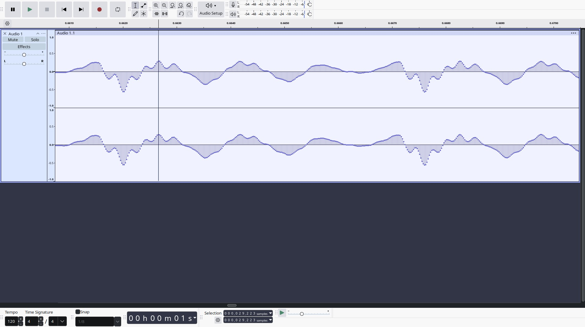

Lab : Les paramètres du son
Exercice 1 : Période et fréquence d'un son (7 pt)
Le but de cet exercice est de déterminer la période et la fréquence du son suivant : voix.wav en utilisant Audacity.
Tout d'abord, ouvrez le fichier audio dans Audacity.
Zoomez sur la forme d'onde en cliquant sur l'icon "loupe" à côté de la barre de lecture afin d'afficher les échantillons :

Dans la zone "Selection", changez les unités en "échantillons" (samples). Cette unité est la plus précise qu'Audacity fournisse.
Repérez une période complète dans la forme d'onde et sélectionnez là.
Calculez la période en nombre d'échantillon.
Dans le fichier fourni, il y a 44.100 échantillons par secondes. Fort de cette information, convertissez la période en seconde.
Calculez la fréquence du son à partir de la période.
Exercice 2 : Fréquence fondamentale (1 pt)
Trouvez la fréquence fondamentale de la suite harmonique : {310,465,620} Hz.
À quelle note correspond-elle ?
Exercice 3 : Envelope (2 pt)
Mesurez la durée de l'attaque et du release du son de piano suivant en secondes : a3-4.wav.
Exercice 4 : Spectre d'un son (6 pt)
Mesurez la fréquence, l'amplitude en dB et la durée approximative en secondes des 13 premiers partiels du son suivant : a3-4.wav.
Pour la fréquence et l'amplitude, utilisez l'outil Analyze/Plot Spectrum d'Audacity.
Pour la durée des partiels, affichez le spectrogram du son dans Audacity et repérez les partiels en fonctions des mesures effectuées dans l'étape précédente.
Exercice 5 : Synthétiser un son à partir de son analyse (4 pt)
Utilisez les valeurs obtenues dans l'exercice précédent pour paramétrer le programme Faust suivant et synthétiser le son de piano enregistré :
Pour l'itération pm.modeFilter(300,2,ba.db2linear(0)), 300 correspond à la fréquence, 2 à la durée en seconde et 0 à l'amplitude en dB du partiel correspondant.